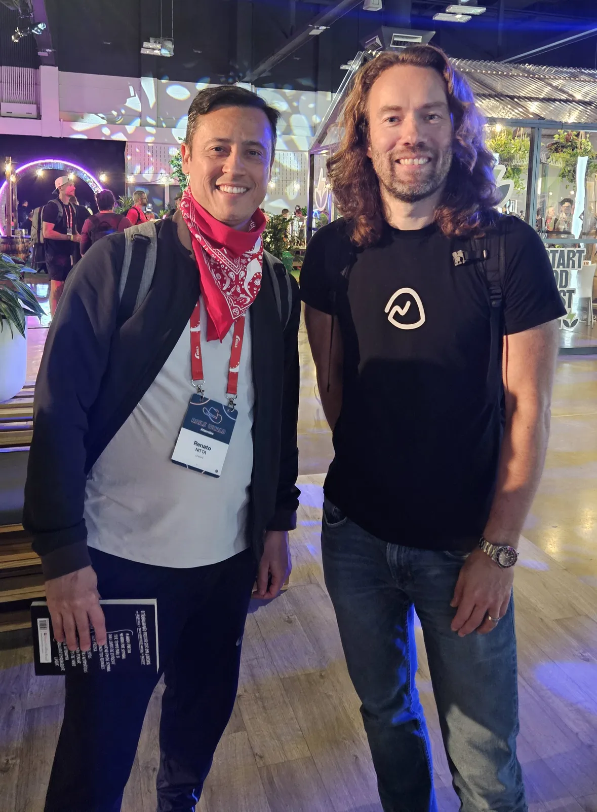

07 Rails World 2026 · Austin, TX
Quanto tempo até ninguém mais revisar código pessoalmente?
Pergunta de Obie Fernandez, em conversa com DHH
“Very soon.”

A qualidade e a velocidade
Renato Nitta · @renatonitta
Uma proposta de mudança no código — como um aditivo de contrato.
Gerar código ficou barato. Verificar se está correto continua sendo o problema difícil.
Paráfrase · The Pragmatic Engineer, nov/2026
Agentes já abrem muitos PRs. Mas quem aprova sem revisar joga uma slop grenade no colega.
Paráfrase · The Knowledge Project, set/2026
Se declarou aposentado da programação profissional: escrever código à mão virou exceção.
Paráfrase · Keynote Rails World 2026
Quanto tempo até ninguém mais revisar código pessoalmente?
Pergunta de Obie Fernandez, em conversa com DHH
“Very soon.”

automações a cada 30 min
Distribuição Linux de DHH, sobre Arch + Hyprland
Agentes escreveram praticamente todo o código do Omarchy 4.
A revisão de PRs também roda com agentes. DHH
Hoje eu falei de um gargalo.
Obrigado! · Renato Nitta · @renatonitta
x.com/renatonitta · linkedin.com/in/renatonitta · github.com/renatonitta